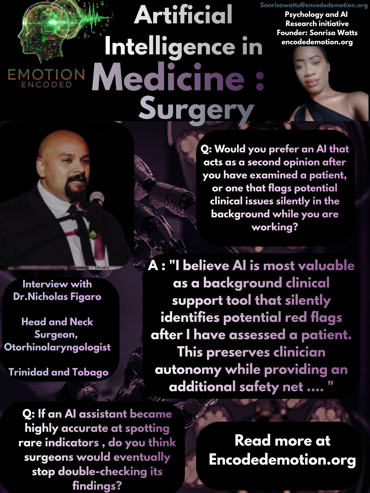

Dr. Nicholas Figaro is a Consultant ENT and Head and Neck Surgeon based in Trinidad and Tobago. He holds a long-standing position at the Eric Williams Medical Sciences Complex (EWMSC) and practices across several private clinical settings. His work is rooted in the rigorous standards of otorhinolaryngology, where clinical autonomy and precise decision-making are paramount.
The Clinical Workflow
Question: Would you prefer an AI that acts as a second opinion after you have examined a patient, or one that flags potential clinical issues silently in the background while you are working?
Dr. Figaro Response: I believe AI is most valuable as a background clinical support tool that silently identifies potential red flags after I have assessed a patient. This preserves clinician autonomy while providing an additional safety net to highlight overlooked diagnoses, atypical presentations, or areas requiring further investigation. In this role, AI serves as an adjunct to clinical judgment, enhancing diagnostic accuracy and patient safety without disrupting the clinical workflow.
Diagnostic Decision-Making
Question: When reviewing a patient’s complex case file, would you prefer an AI tool that suggests a specific diagnosis, or one that just highlights the red flags for you to investigate?
Dr. Figaro Response: I would prefer an AI tool that highlights potential red flags rather than suggests a specific diagnosis. This approach complements clinical reasoning by drawing attention to important findings that may warrant further investigation, while preserving clinician autonomy and reducing the risk of overreliance on AI-generated diagnoses.
The Accountability Factor
Question: If an AI assistant became highly accurate at spotting rare indicators of head or neck pathology in diagnostic work, do you think surgeons would eventually stop double-checking its findings?
Dr. Figaro Response: No. The fundamental nature of surgical practice is rooted in meticulous analysis, critical thinking, and continual verification of clinical findings. Even if an AI assistant became highly accurate, surgeons would still be expected to independently evaluate and validate its conclusions. Rather than replacing clinical scrutiny, AI would serve to strengthen and streamline diagnostic reasoning, enhancing the efficiency and robustness of the surgeon’s analytical process while preserving professional accountability.
Conclusion
Dr. Figaro’s insights underscore that in head and neck surgery, the human in the loop is non-negotiable. Surgeons prioritize systems that protect clinical autonomy, augment their analytical rigor, and maintain professional accountability. AI, in this context, is a tool for refinement, not for abdication of responsibility.
Sonrisa Watts // Emotion Encoded // 2026